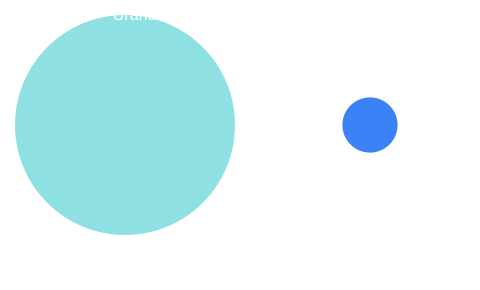

Uranus Facts
- Diameter: 50,724 km.
- Distance from the Sun: about 2.87 billion km.
- One year: about 84 Earth years.
- One day: about 17 hours 14 minutes.
- Its axis is tilted about 98 degrees.
- Coldest atmosphere of any planet: about -224 °C.
- Moons: 28 known. It also has 13 rings.
Axial Tilt Slider
Earth is tilted 23.5 degrees. Uranus is tilted 98. Tilt the planet above.
How Big Is It?
